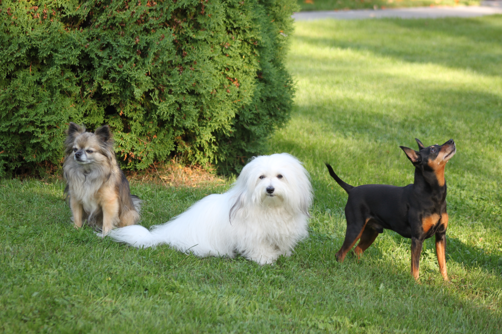

Tervetuloa!
Tervetuloa koirani Milan kotisivuille. Sivuilta löydät tietoa koirastani Milasta ja yleistä tietoa coton de tulear rodusta.
Löydät myös kuvagallerian ja yhteystiedoista linkit instagramiin ja yhteystietoihini.
Voit skrollata kuvakarusellia vaakasuunnassa. Lisää kuvia löydät "Galleria"-osiosta.




Mila
Mila on 9-vuotias coton de tulear. Hän on leikkisä ja iloinen. Hänen lempipuuhaa ovat lenkit metsässä, rannalla kahlaaminen, hiekan kaivaminen sekä lenpileluilla leikkiminen.